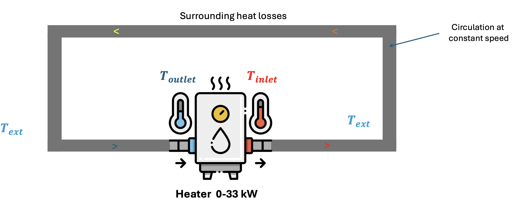
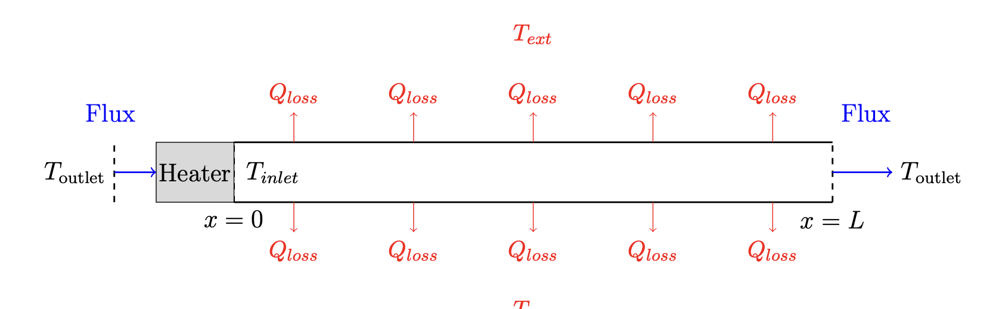
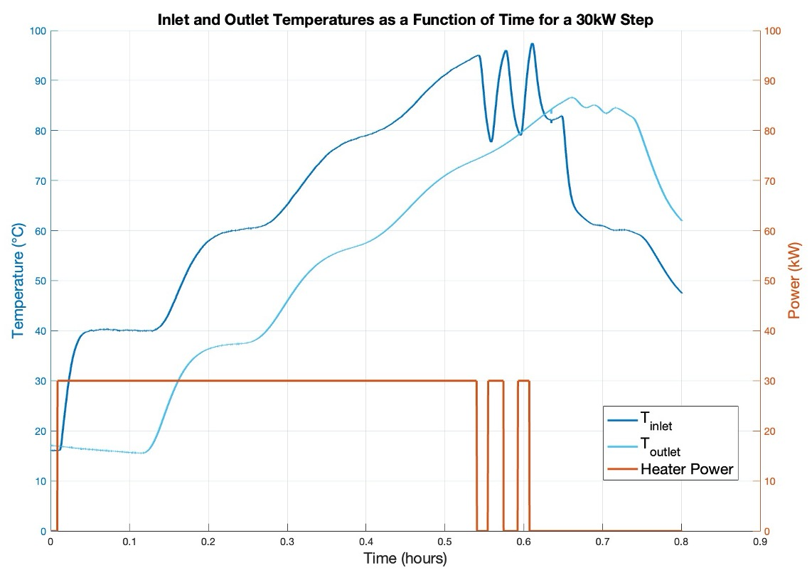
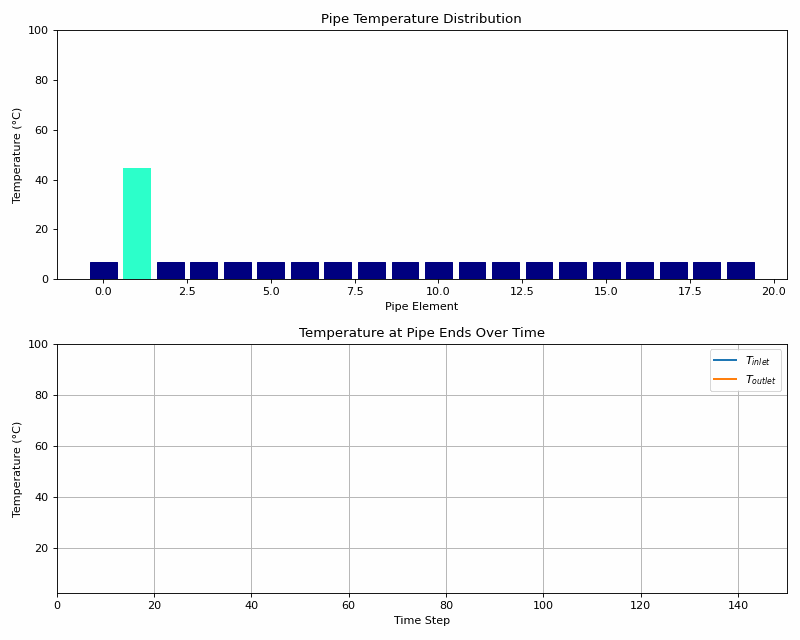
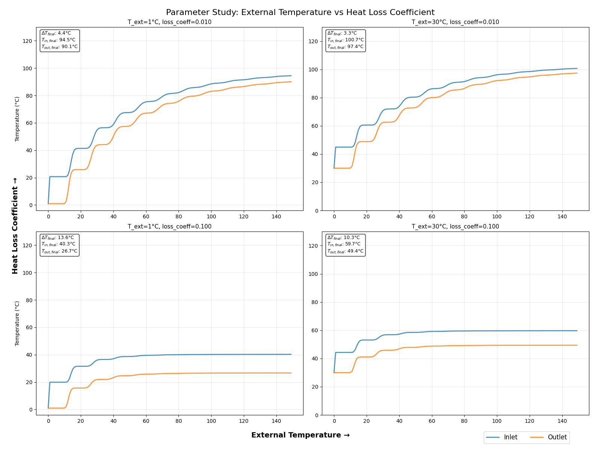

Heated Pipe System with Heat Loss#
This tutorial describes the process of controlling the outlet temperature of a 300 meters heat pipe close to the
boiling temperature.
The main goal is to describe the process of solving rather than the details of the equations.
1. System Description#
The system consists of a circular pipe through which water flows continuously. A heater is connected at the entrance (\(x = 0\)) of the pipe, providing a constant power input \(P\) to the water. The water flows with constant velocity \(u\), losing heat to the environment due to convection. At the outlet, the water returns to the heater, creating a closed loop.

Schematic of the system:#

Step response and first findings:#

From this we observe :
Stair-like behavior due to the recirculation
An inlet temperature that can go close to 100°C despite an outlet temperature that is barely above 85°C
A significant delay (~12 min)
A coupling and an intrication between inlet and outlet temperature
How to model and simulate these stairs?
Physical model equations:#
The evolution of the temperature in the pipe is governed by the following partial differential equation (PDE):
All notations are detailed in Appendix.
Using \( \Theta_{\text{inlet}}(t) = T_{\text{inlet}} - T_{\text{ext}} \) and \(\Theta_{\text{outlet}}(t) = T_{\text{outlet}} - T_{\text{ext}}\)
We can write delayed equations in which \(\tau\) is the time of travel and \(P\) the power f the heater:
Naive model#
The PDE equation can be naively discretized as follows:
The pipe is divided in N discrete segments
For each segment, its temperature is obtained by averaging its temperature with the neighbors and with the surrounding environment,subject to the heat loss coefficient.
Each temperature value is transferred to the next segment

This simulation divides a pipe into small segments to model heat transfer step by step. At each time step, every segment’s temperature is updated based on its neighbors and the environment, while the temperature at the pipe’s end is “pushed forward” to the start—like a wave of heat moving through. The heater at one end injects warmth, and the animation reveals how heat spreads, stabilizes, and flows through the system.

2. System Simulation#
3. Control#
Control Objectives#
1) Traditionnal control technique with tinkering#
The standard equation of the PI controller is:
where:
u(t) is the power of the heater,
\(K_p\) is the proportional gain,
\(K_i\) is the integral gain,
e(t) is the error between the setpoint and the outlet temperature.
2) Optimal control via MPC#
where:
\(N_p\) is the prediction horizon.
\(r_i\) is the moving reference at time \(i\).
\(d_i\) is the moving disturbance (\(T_{ext}\)) at time \(i\).
\(Q \succ 0\) and \(R \succ 0\) are weighting matrices for output tracking and input usage, respectively.
3) Reinforcement Learning#
Comparison and conclusion#
Performances#
Security#
Complexity#
Conclusion#
Appendix#
\( x \): Position along the pipe in \(meter\).
\( t \): Time in \(second\).
\( T(x, t) \): Temperature of water at position \( x \) and time \( t \) \(kelvin\).
\( u \): Fluid velocity in \(meter/second\).
\( \rho \): Density of water in \([ \si{\kilogram\per\meter\cubed} ]\).
\( c_p \): Specific heat capacity of water in \([ \si{\joule\per\kilogram\kelvin} ]\).
\( S \): Cross-sectional area of the pipe in \([ \si{\meter\squared} ]\).
\( P_{\text{pipe}} \): Perimeter of the pipe in \(meter\).
\( h \): Convective heat transfer coefficient in \([ \si{\watt\per\meter\squared\kelvin} ]\).
\( P \): Heater power input in \(watt\).
\(K = e^{-\frac{\alpha \tau}{2}}\), a factor representing the effect of time delay and thermal losses,
\(\tau\) is the delay time in \(second\),